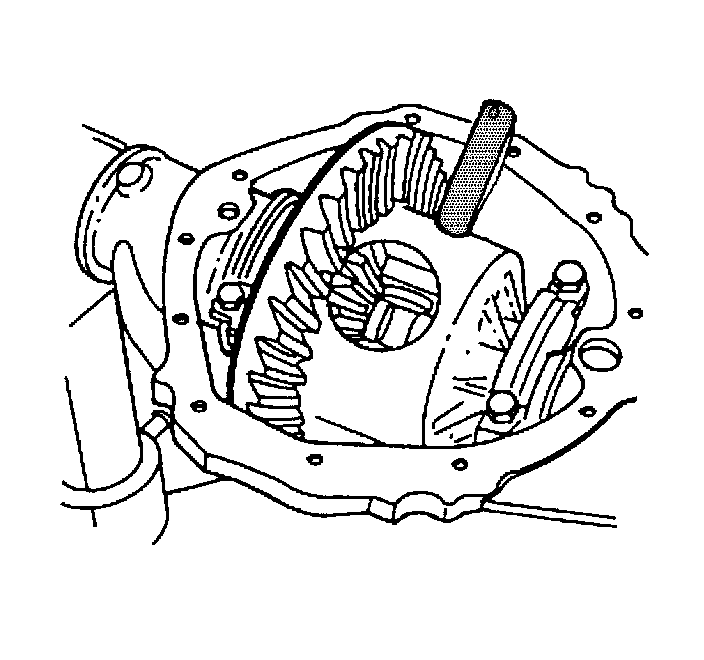

Differential Replacement
Differential Replacement
Tools Required
J 24429 Side Bearing Backlash Spanner
Removal Procedure
Important: Group and mark the shims together as originally removed. If you remove or replace the ring and pinion gear set, perform the bearing preload, backlash, and gear tooth contact pattern check in order to ensure proper contact of the gears. If you reinstall or replace the differential carrier without replacing any other component (i.e. pinion and ring gear set, bearings. etc.) then you may reinstall the carrier with the original shims in their original locations. Always perform a gear tooth contact pattern check, even when you remove only the carrier.
1. Raise and support the vehicle. Refer to Lifting and Jacking the Vehicle.
2. Remove the axle shafts.
3. Remove the differential bearing adjuster nut lock (9.5/9.5 LD inch axle - right side).
4. Remove the bearing cap bolts.
5. Remove the bearing caps. Mark the bearing caps left and right.

6. For the 8.6 inch axle, install the pinion shaft into the differential case part way and rotate the differential assembly until the pinion shaft contact the top of the axle housing.
Notice: Refer to Differential Housing Cover and Gasket Removal Notice.
7. For the 8.6 inch axle, rotate the drive pinion clockwise in order to force the differential assembly out of the axle housing.
8. For the 9.5/9.5 LD inch axle, loosen the differential bearing adjuster nut using the J 24429.
9. Remove the differential assembly.
10. Remove the bearing cups, the shims, and the spacers as necessary.
Mark the cups and shims left and right and in the proper order as necessary. Place the cups and the shims with the bearing caps.
11. Remove the differential side bearings, if necessary.
12. Remove the ring gear, if necessary.
Installation Procedure
1. Install the ring gear, if necessary.
2. Install the differential side bearings, if necessary.
3. Lubricate the differential side bearings with axle lubricant. Use the proper fluid. Refer to Fluid and Lubricant Recommendations.
4. Place the case, with the bearing cups installed, into the axle housing.
Support the case in order to keep the case from falling out of the axle housing.
5. Install the bearing caps and the bolts. Do not torque the bearing cap bolts at this time.
6. Adjust the differential side bearing preload. Refer to Differential Side Bearing Preload Adjustment.
7. Adjust the backlash. Refer to Backlash Adjustment.
8. Perform a gear tooth contact pattern check. Refer to Gear Tooth Contact Pattern Inspection.
Notice: Refer to Fastener Notice.
9. Tighten the bearing cap bolts.
Tighten the bearing cap bolts to 85 Nm (63 lb ft).
10. Install the axle shafts.
11. Fill the axle with the proper lubricant. Refer to Rear Axle Lubricant Replacement.
12. Lower the vehicle.